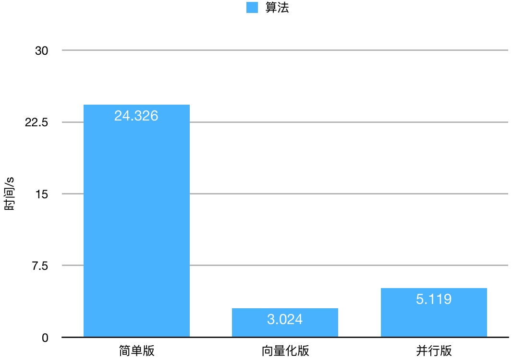

Github地址为https://github.com/zhuangqh/LR-x
数学原理
逻辑回归与线性回归非常类似，区别就是预测函数不同。预测函数表示预测结果取1的概率。
\[h_\theta=g(\theta^Tx)=\frac{1}{1+e^{-\theta^Tx}}\]
定义损失函数
\[Cost(h_\theta(x),y)=\]
对损失函数做最大似然估计，然后取对数并乘与 -1/m 得到
\[J(\theta)=\frac{1}{m} \sum^n_{i=1}Cost(h_\theta(x_i), y_i)=-\frac{1}{m}[\sum^n_{i=1}y_i\log h_\theta(x_i)+(1-y_i)\log(1-h_\theta(x_i))]\]
通过梯度下降的方法来得到\(J(\theta)\)的最小值。
对\(J(\theta)\)求导数得到：
\[\frac{\partial J(\theta)}{\partial \theta_j} =-\frac{1}{m}\sum^n_{i=1}(y_i\frac{1}{h_\theta(x_i)}\frac{\partial h_\theta(x_i)}{\partial \theta_j}-(1-y_i)\frac{1}{1-h_\theta(x_i)} \frac{\partial h_\theta(x_i)}{\partial \theta_j})\\
= -\frac{1}{m}\sum^m_{i=1}(y_i\frac{1}{g(\theta^Tx_i)}-(1-y_i)\frac{1}{1-g(\theta^Tx_i)})\frac{\partial g(\theta^Tx_i)}{\partial \theta_j} \\
= -\frac{1}{m}\sum^m_{i=1}(y_i\frac{1}{g(\theta^Tx_i)}-(1-y_i)\frac{1}{1-g(\theta^Tx_i)})g(\theta^Tx_i)(1-g(\theta^Tx_i))\frac{\partial \theta^Tx_i}{\partial \theta_j} \\
= -\frac{1}{m}\sum^m_{i=1}(y_i(1-g(\theta^Tx_i))-(1-y_i)g(\theta^Tx_i))x_i^j\\
= -\frac{1}{m}\sum^m_{i=1}(y_i-g(\theta^Tx_i))x_i^j\\
= \frac{1}{m}\sum^m_{i=1}(h_\theta(x_i)-y_i)x_i^j\]
那么参数更新的过程为
\[\theta_j := \theta_j - \alpha \frac{1}{m}\sum^m_{i=1}(h_\theta(x_i)-y_i)x^j_i\]
加入正则化项，防止过拟合
\[\theta_j := \theta_j - \frac{\alpha}{m}\sum^m_{i=1}(h_\theta(x_i)-y_i)x^j_i-\frac{\lambda}{m}\theta_j\]
下面着手用代码实现
代码实现
实现的时候，我使用的是文档比较友好的eigen来辅助矩阵计算。使用OpenMP做并行化。
各个版本的实现非常相似，区别在于计算梯度的部分。伪代码如下
initial theta
for each iteration do
gw <- get_gradient_from_train_data()
theta <- theta - alpha * gw
if convergence
then break
end
以下假设theta个数为n, 训练集数目为m
简单版本
第一个版本是直接计算。对于训练集的每一行，计算 与的内积，然后减去，再乘与，得到常数coeff。常数coeff与相乘便得到这一个训练样本的梯度向量。将所有m个向量相加便得到最终的梯度。
VectorXd gw;
gw.setZero(n);
for (size_t i = 0; i < m; i++) {
double coeff = train.first.row(i) * theta;
// h(xi) = 1/m * (g(xi * theta) - yi)
coeff = 1.0 / m * (g(coeff) - train.second(i));
// gwi = h(xi) * xi
VectorXd gwi = coeff * train.first.row(i);
gw += gwi;
}
向量化
观察式(1)，发现可以转化为矩阵乘法。也即向量化。
\[记 \mathbf{E} = g(x \cdot \theta) - y\]
\(\theta_j\)化为：\(\theta_j := \theta_j - \alpha \cdot (x_j^{(1)}, x_j^{(2)},...,x_j^{(m)}) \cdot \mathbf{E}\)
那么综合起来就是：
\[\theta := \theta - \alpha \cdot x^T \cdot \mathbf{E}\]
用代码实现起来并不难。eigen帮我们实现快速的矩阵乘法。
c++代码做了重载，使得代码就像数学表达式一样直白。
// A = x * theta
VectorXd inner = train.first * theta;
// E = g(A)
VectorXd ga = inner.unaryExpr(std::ptr_fun(g));
// gw = 1/m * xT * (E - y)
VectorXd gw = 1.0 / this->m * (train.first.transpose() * (ga - train.second));
并行化
我的并行化是在简单版本的基础上进行改进的。可以看到，在对每一行计算梯度的时候，行与行之间是相互独立的。然后再将所有这些梯度相加。这天然就是一个可以被并行优化的问题。
我使用的是OpenMP，只要在需要并行话的地方写上对应的宏，编译器就会帮我们做并行化。
在做并行化的时候，会有这样一个问题。在简单版中，用于迭代计算梯度的 i 在并行化会被处理器竞争。导致结果跟我们预想的不符。
我们用openmp的函数获取处理器的数量，为每个处理器分配一个迭代器，独立使用。
int coreNum = omp_get_num_procs();
// temp sum in each processor
std::vector<VectorXd> sumInCore(coreNum);
// iterator in each processor
std::vector<size_t> iters(coreNum);
并且分配空间用于存放各个处理计算得到的梯度和。各个处理独立使用的迭代器和临时和变量，这样在并行化中便不存在竞争。
然后将训练样本均匀分配给每个处理器。在一个处理器中，计算这些训练样本的梯度和。在并行化结束后，将各个处理器的梯度和相加得到总的梯度。
结果验证与性能比较
并行化了之后不能简单使用CPU clock来衡量运算的快慢。因为并行版本会使用多个核。
我使用OpenMP提供的omp_get_wtime函数，他会返回从任意一个一致点所经过的时间。我用这个来衡量各版本的计算速度。
void timer_wrapper(std::function<void()> func) {
double startTime = omp_get_wtime();
func();
double stopTime = omp_get_wtime();
std::cout << stopTime - startTime << std::endl;
}
使用这样函数timer来计算一个函数的运行时间。timer接受一个类型为function
性能对比
测试数据是我从网上找的一个垃圾邮件的数据。样本数2760，feature数量57。我们迭代1000次来看运行时间的差别。
并行版比简单版快了4倍多。向量化版是最快的，这可能与eigen的实现有关，因为向量化的乘法完全使用eigen的函数。

预测结果 naive.txt, vectorize.txt, parallel.txt 三者的结果一模一样。这说明算法是正确的。